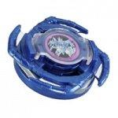

Frostic Dranzer
Note: Since this article was published, significant new and more accurate information has come to light, and as a result, this article must be updated. Please do not take all of the information here as the truth, as more extensive testing on the parts of this Beyblade has since provided information which conflicts with and/or expands upon the understanding of these parts this article was based upon. However, the Overall section has been updated based on this new information, and as such is a reliable source of information. Updates will be posted on the main page when completed.
| Frostic Dranzer | |
|  | |
| Number: | 3 |
|---|---|
| System: | 4-Layer |
| Type: | Balance |
Contents
Name Variation
Frostic Dranzer was released by Hasbro as Ultimate Frostic Dranzer.
Attack Ring (AR): Wing Cross
- Weight: 5 grams
Wing Cross is a strong AR because of its extremely evenly distributed weight, thin size, and smooth edges. It was previously commonly used among Zombies/Spin-Stealers before becoming outclassed by other ARs, such as Galeon's War Lion or Driger S's Tiger Defenser. Despite this, Wing Cross did not become obsolete.
Bistool's Wing Cross stayed popular in the Bistool|10bBistool combo, and also in some compact combos. This AR has many uses in balance and survival type combos.
Use in First Generation Zombies
Wing Cross was used as an AR in first generation zombies (that is, before the S Series was released). It was used because of its balanced weight distribution, thin design, and because its projections (the attack spikes protruding from the AR) could be used to steal spin, as they extended just beyond the reach of the Wide Survivor WD.
IMPORTANT: Mold Variations
The mold variation of the Wing Cross AR is what makes it such a popular choice. While the Takara version of Bistool, Gekiryu-oh and Frostic Dranzer, along with the Hasbro older versions of Gekiryu-oh and Frostic Dranzer have thin spikes, the ends of Hasbro Bistool's, Frostic Dranzer's (new mold), and Gekiryu-oh's (new mold) spikes have been connected to the center of the AR, supposedly to prevent breaking. Because of this, Wing Cross's AR's new mold has become a far more popular choice than the older mold.
If you wish to see combinations using Bistool's Wing Cross, please see the Bistool article.
Weight Disk (WD): Balance
See Balance (WD).
Blade Base (BB): Semi-Flat Base
See Semi-Flat Base.
Other Versions
Gallery
-
Frostic Dranzer (front view)
-
Frostic Dranzer (side view)
-

Frostic Dranzer parts
-
Attack Ring - Wing Cross
-
Attack Ring - Wing Cross (underside)
-
Blade Base - Semi-Flat Base
Overall
While Wing Cross, in particular the less recoil-prone if more fragile an more difficult-to-find first mold, is unparalleled for Right Spin Survival and an excellent Attack Ring overall, Semi-Flat Base decent if outclassed by Zombie setups and Frostic Dranzer's uncustomized performance quite solid, if not as much so as Bistool's due to its inferior Weight Disk; the availability of cheaper and sometimes more versatile alternatives such as Driger S and Roller Defenser means that it falls short of being a must have. This Beyblade is not a must-have, but it is nevertheless a welcome addition to any collection.